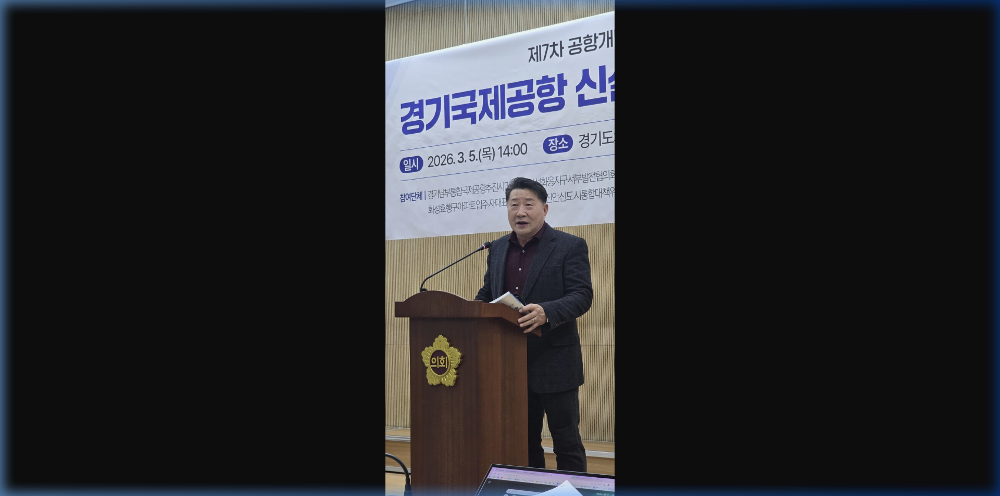
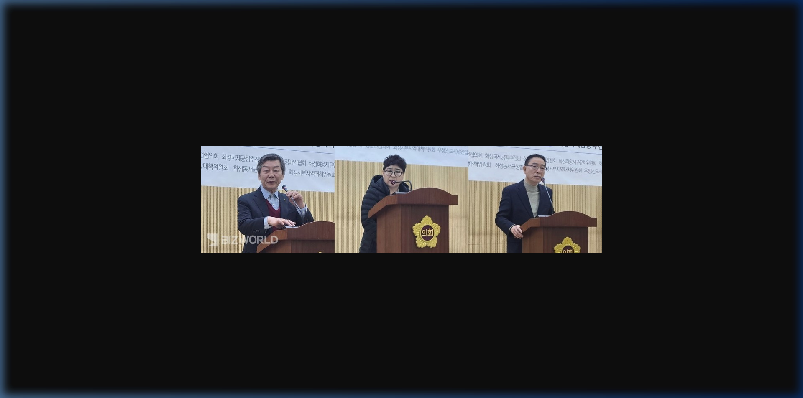
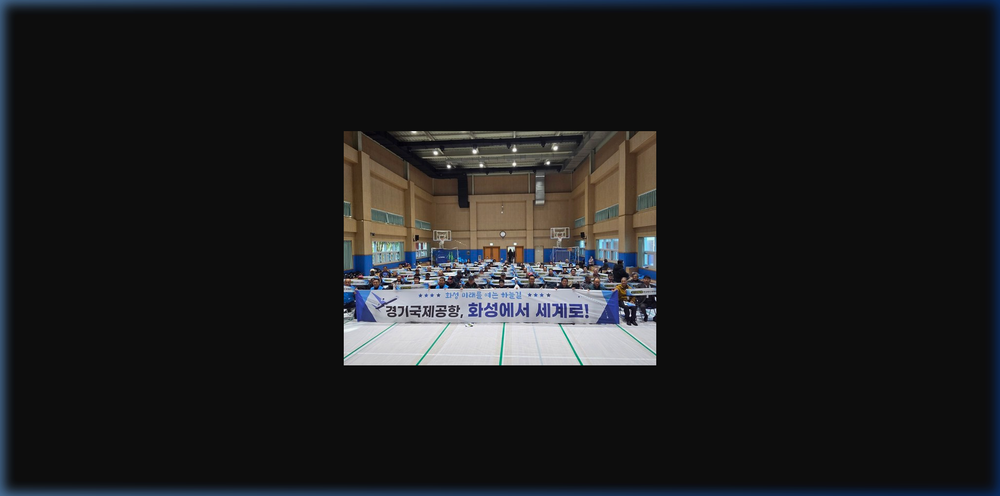
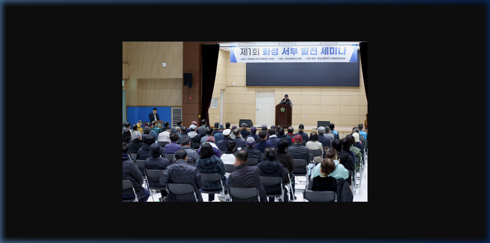
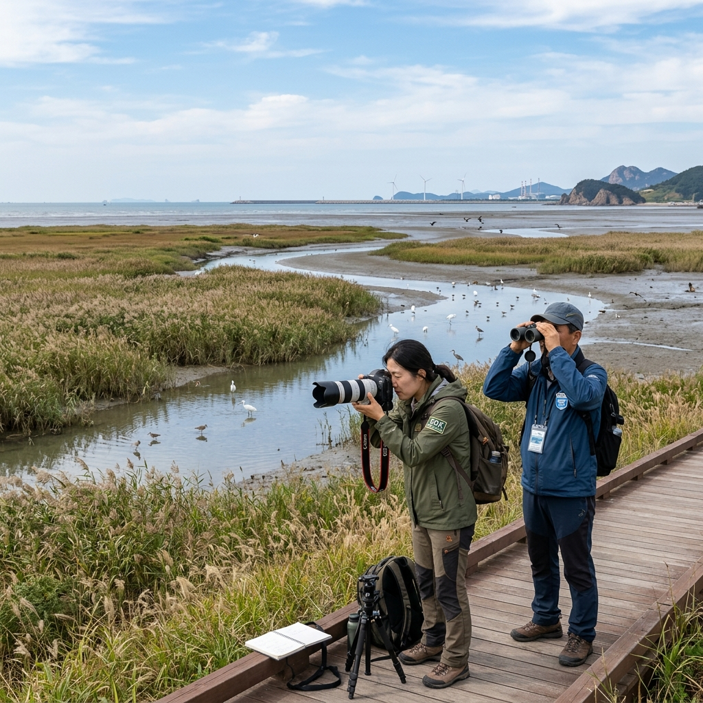
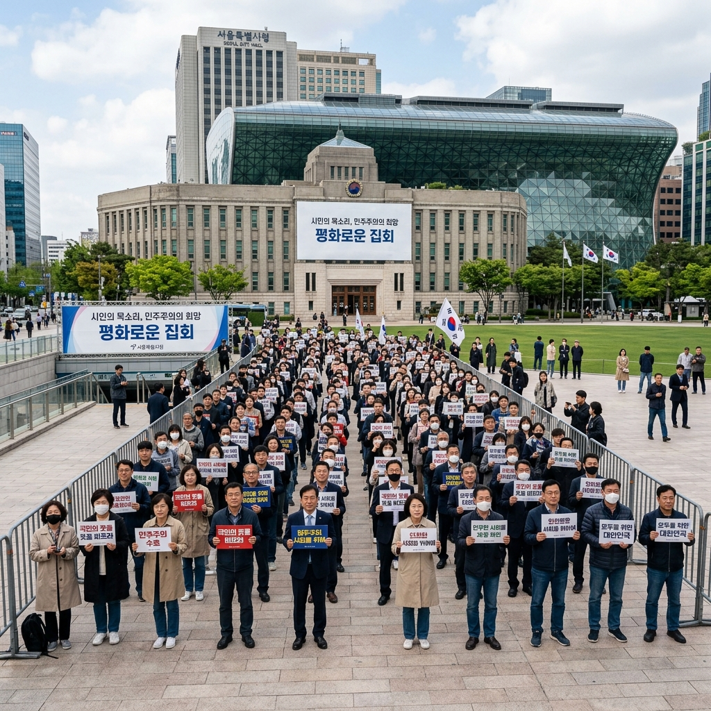
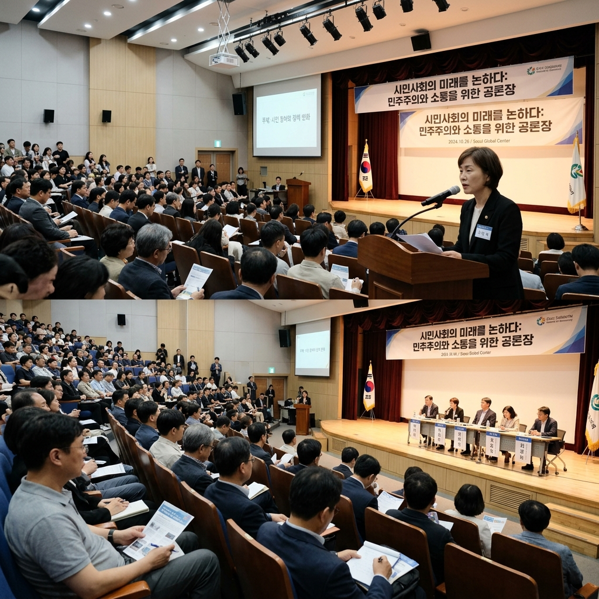
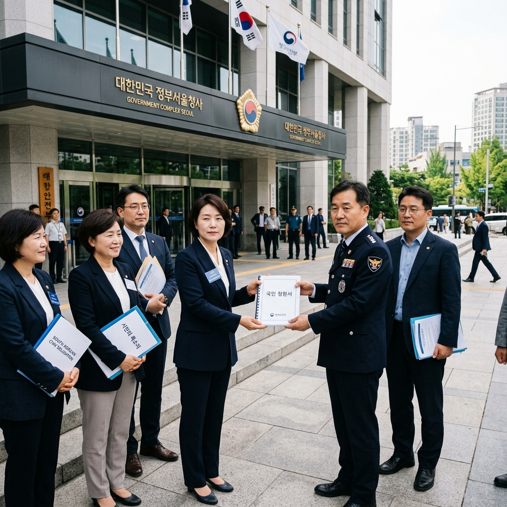
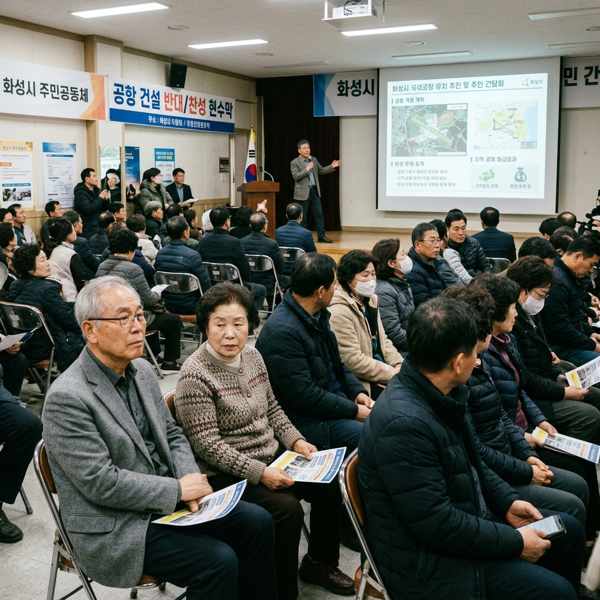
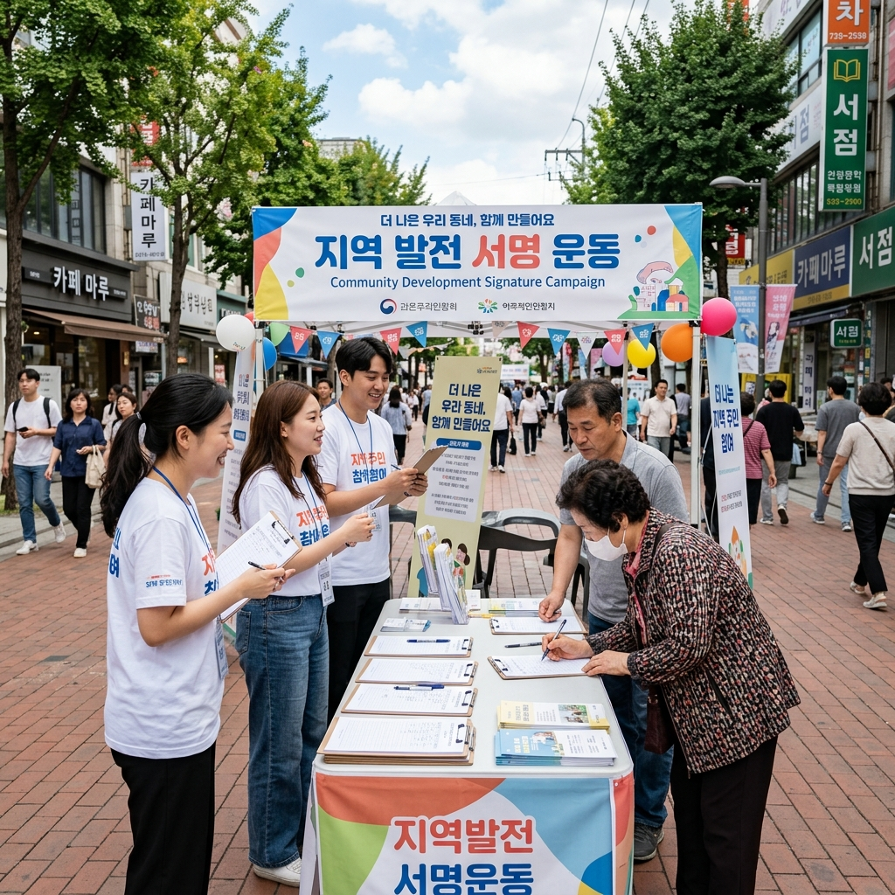

×

화서협의 세미나, 기자회견, 주민 간담회 등 주요 활동 사진 모음
지속가능한 화성 서남부 발전과 경기국제공항 유치를 위해 발로 뛴 기록들입니다.

화옹지구 및 서남부 항공기 소음 피해 대책과 경기국제공항 소음 차단 레이아웃 방안에 대해 토론하는 김애화 회장의 모습입니다.

화성국제공항 범시민단체 연합과 함께 화옹지구를 경기국제공항 최종 후보지로 조속히 지정할 것을 정부에 강력히 요구하는 성명서 발표 현장입니다.

경기국제공항 건설 타당성 및 화성 서부 지역 경제 연계 활성화를 위한 화서협 공식 정기 세미나 발표 현장입니다.

화성 화옹지구 서부발전협의회 주관으로 개최된 학술 세미나의 성공적 개최 후 참가 전문가 및 위원들과의 기념 촬영입니다.

화서협 자문단과 환경 전문가들이 화옹지구 간척지의 환경적 지속 가능성을 확보하고 조류 이동경로 영향을 분석하기 위해 실시한 생태조사 현장입니다.

경기도의회 앞 광장에서 경기남부권 1,000만 주민들의 항공 접근권 확보 및 경기국제공항의 국가 계획 반영을 정당하게 건의하는 궐기대회입니다.

화성 서부권의 극심한 경제 낙후를 해결하기 위해 공항 배후 도시 및 교통망 확충의 경제적 기대 편익을 주민들에게 알리고 논의하는 정책 토론회입니다.

화서협 회장단과 임원진들이 직접 여의도 국회를 방문하여 국회 국토교통위원회 소속 의원들에게 화옹지구 공항 추진 타당성 자료집을 공식 전달했습니다.

우정읍과 장안면 일대 고령화로 인한 지역 소멸 위기를 논의하고, 경기남부 국제공항 유치를 전제로 교통망이 들어설 수 있도록 의견을 나누는 간담회입니다.

화성 주민들의 뜻을 한데 모으기 위해 남양읍 및 향남읍 일대에서 경기국제공항 조속한 건설 착수를 청원하는 서명 가판대 캠페인을 진행했습니다.